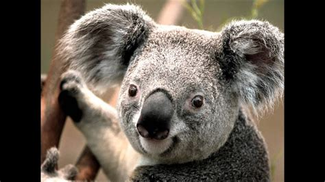
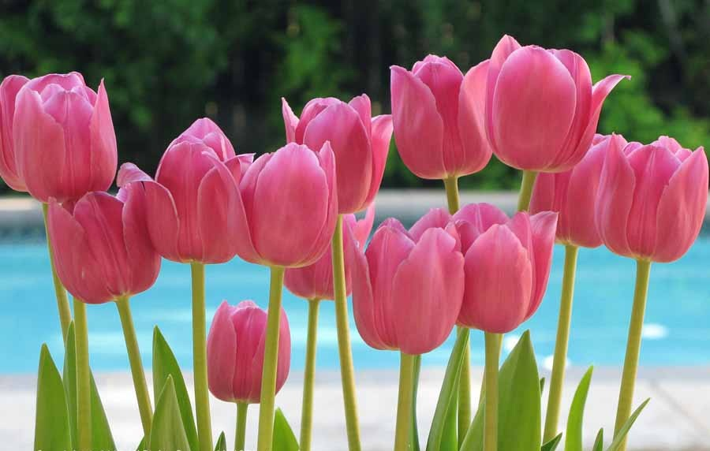

ovde smo ucitali sliku
i podesili da se poravna
uz levi rub, tako da
sav tekst koji pisemo
bude vidljiv s njene
desne strane...
Ako je tekst koji pisemo duzi od ukupne visine slike onda ce se ostatak teksta
nastaviti ispisivati ispod slike...

Ovde smo ucitali sliku
i podesili da se poravna
uz desni rub, tako da
sav tekst koji pisemo
bude vidljiv sa njene leve strane...
Ako je tekst koji pisemo
duzi od ukupne visine slike
onda ce se ostatak teksta
nastaviti ispisivati ispod slike...

ako sliku zelio postaviti na sredinu ekrana,
onda se moramo posluziti P ALIGN=CENTER
kako bi definisali dasvi objekti u novom paragrafu
budu centrirani na sredinu ekrana
Milan Paunovic